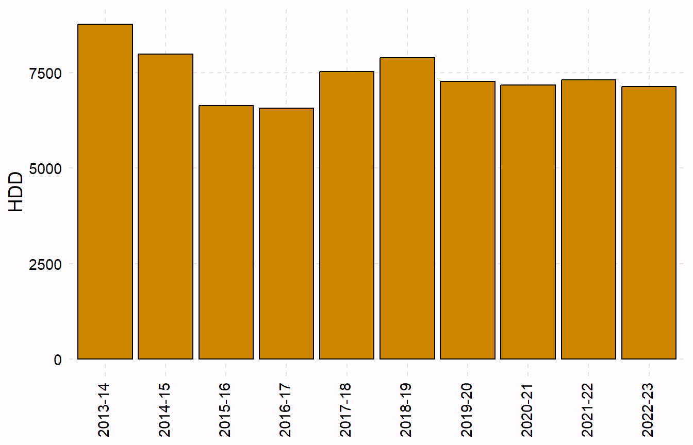
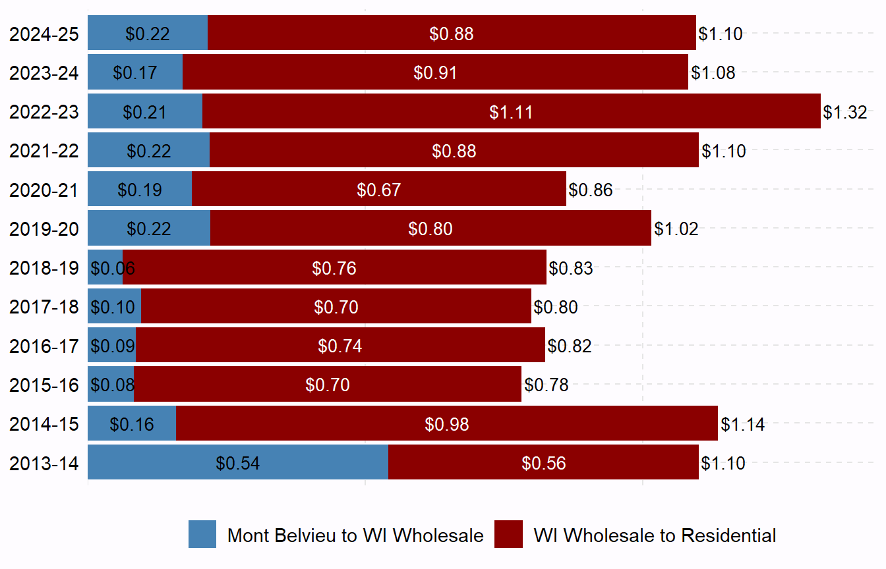

Recently I have been considering the relative costs of propane and wood for heating our house. One of the considerations for propane is how the cost fluctuates from year-to-year and within a year. Most propane companies offer a “lock-in” price to protect against the supposedly inevitable increase in the cost of propane during the winter. I questioned whether this was a good investment or not (like many things, I suspected it was better for the propane company than me).
The U.S. Energy Information Administration (EIA) has a website that shows the price per gallon of propane in Mont Belvieu, TX, as well as the wholesale and residential prices of propane during the heating season for a variety of regions and states. Both pages provide an option to download the data, which I did to play with below.
Note that I am neither an economist nor a commodities trader. These graphs are simply my exploration to develop some understanding of the costs of propane for heating my house.
Mont Belvieu
Complete Time Series
Mont Belvieu is a large propane (and other gas) storage location in Texas and the primary pricing point for propane (see this1). Thus, examining the price of propane at Mont Belvieu may indicate the basis for current and future propane prices locally.
1 And this for a brief but interesting note about propane storage in Mont Belvieu.
Figure 2 shows the daily price per gallon of propane at Mont Belvieu. There was a clear increase in price throughout the 2000s. Since then prices have varied, somewhat dramatically at times. Prices have dropped in the last year or so.
Boxplots of average annual heating year prices (i.e., July to June) show the same basic trends – increase in the 2000s and more variability since then (Figure 3).
Inter-Annual Seasonal Trends
My common thought (shared by many others, especially those selling propane to customers) is that propane prices would be higher in fall and winter than spring and summer. Figure 4 shows the daily prices (per gallon) separately for each of the last 14 heating years (July to June) to more easily see inter-annual trends. My thought was supported in years like 2016-17 and 2020-21, but was not supported in many other years. Furthermore, I don’t see a consistent inter-annual trend among years.
Wisconsin Wholesale/Residential Prices
The EIA also provides “wholesale” and “residential” propane prices for the heating season (they define that as October to March) for broad geographical areas (called PADDs) and for individual states.2 Wholesale and residential are as defined below by the EIA.
2 Wisconsin is in PADD 2 (the “Midwest”)
- Wholesale: The rack price charged for propane; i.e., the price paid by customers who purchase propane free-on-board at a supplier’s terminal and who provide their own transportation for the product.
- Residential: The price charged for home delivery of consumer grade propane intended for use in space heating, cooking, or hot water heaters in residences.
In my exploration, I interpret “residential” to be the price at which I buy propane from my local supplier and “wholesale” to be the price that my local supplier paid. From this, and probably too simplistically,3 I interpret the following:
3 For example, I don’t account for a time lag between when my local supplier buys the gas and sells it to me.
- Difference between wholesale and Mont Belvieu price: cost plus markup to get propane from Texas to Wisconsin.
- Difference between residential and wholesale price: cost plus markup for my supplier to get that propane to my house.
From Figure 5 it seems that residential prices stay fairly constant in some years (e.g., 2015-16, 2018-19, and 2022-23), but not others. In the other years it is common for the residential price to have a mid- late-winter peak (2016-17, 2017-18, 2020-21, and 2021-22).4
I suspected that the difference in these years may be due to demand, such that in relatively warm winters local suppliers may have had enough propane in storage to meet demand and not have to buy during the winter. However, this theory was not supported by overall heating degree days for the state of Wisconsin (Figure 6).5
5 Data from here.

Finally, it appears that it cost roughly $0.10 to get propane to Wisconsin in the late 2010s, but hat increased to approximately $0.20 in the early 2000s. The cost to get from the supplier to a residence was roughly $0.75 in the late 2010s, but became more variable and generally higher in the early 2020s.
